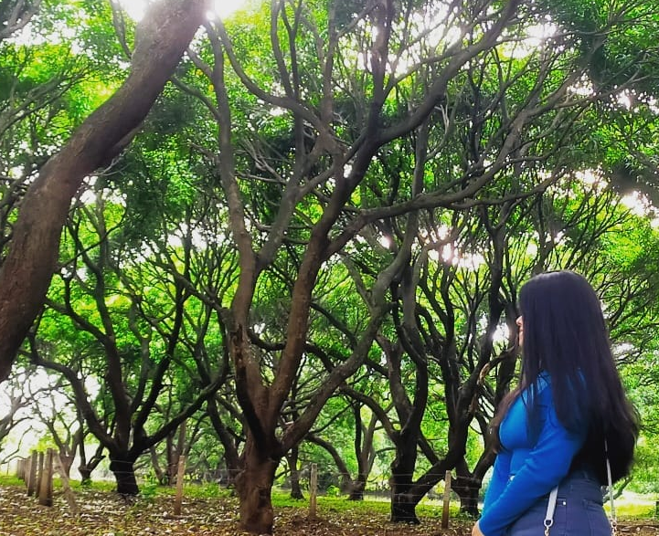
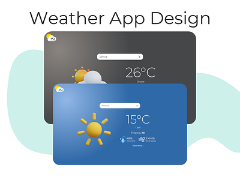

Hello! It's Me
Garima Sahu
and I am a passoinate

Work Experience

HTML developer
I would like to acknowledge the successful completion of the HTML and
CSS programming task.The skills have greatly contributed to the project's
success.

WEATHER Website
I would like to acknowledge the successful completion of the HTML and
CSS programming task.Build a website using HTML,jsand
CSS that fetches wedsite data from an API and displays the current weather
conditions.

NETFLIX Website
I would like to acknowledge the successful completion of the HTML and
CSS programming task.completed my netflix website which enhanced my learning skills
also thanks to BHARAT INTERN for shovering skills.